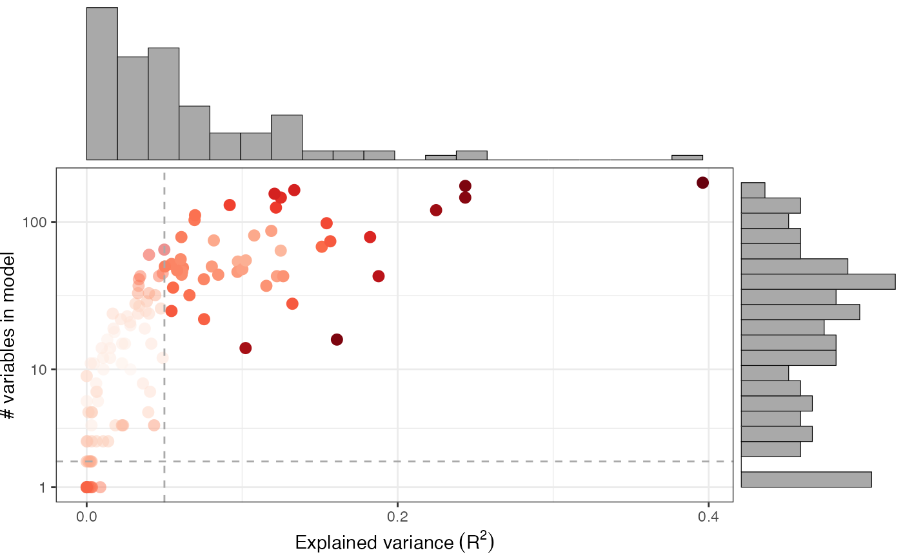
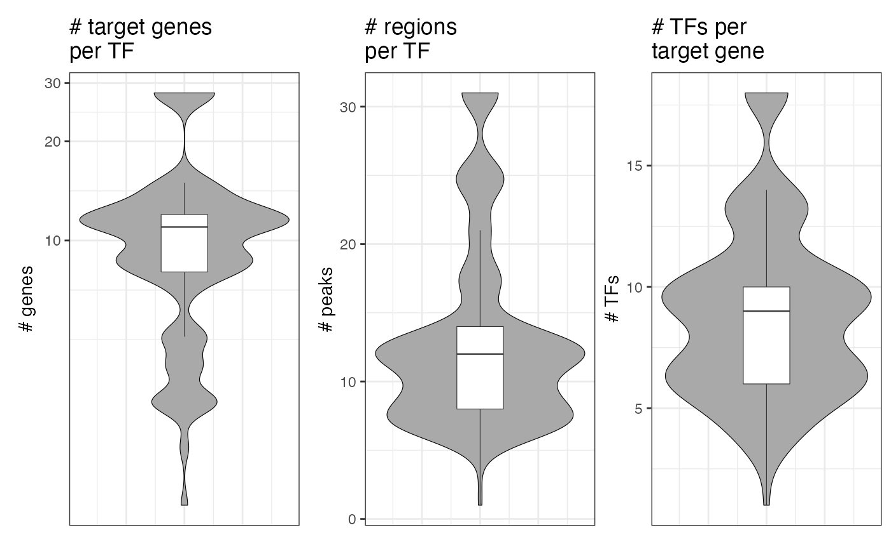
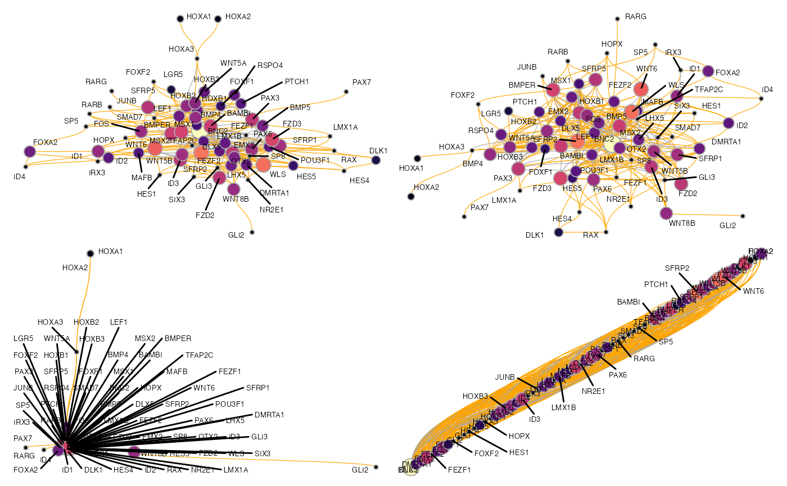
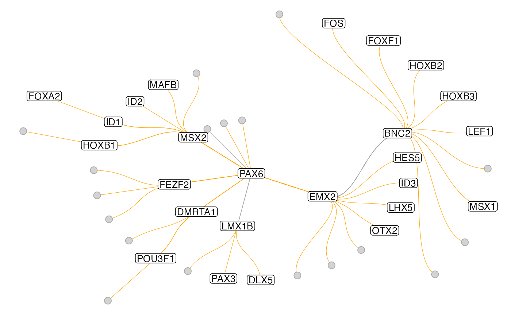
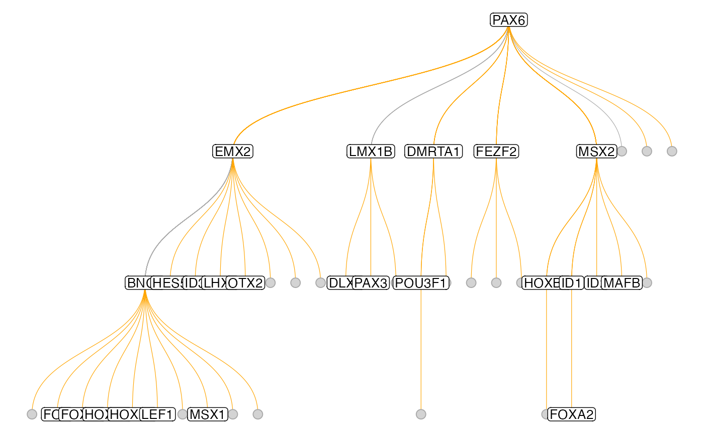
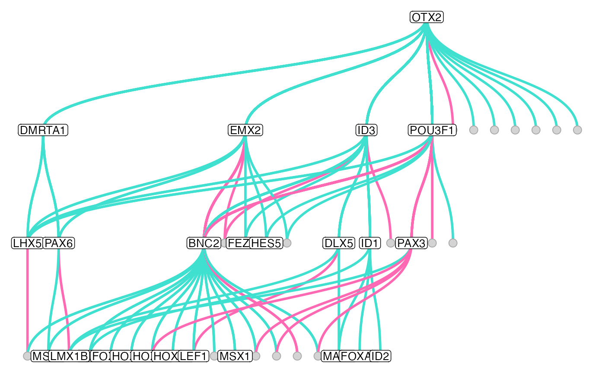
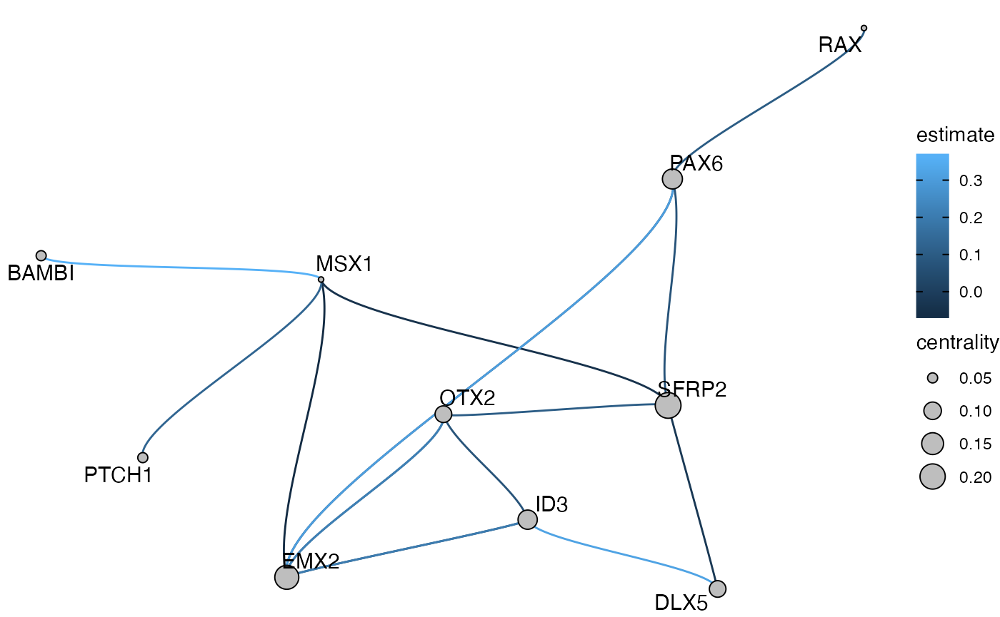

Visualization
Jonas Simon Fleck
17/05/2022
visualization.RmdHere we want to show you some ways to visualize the GRN and to plot some metrics that might be interesting to look at for quality control. First, we load an object that already has a GRN inferred.
muo_data <- read_rds('muo_data.rds')
muo_data@grn## A RegulatoryNetwork object based on 83 transcription factors
## 1 inferred network: glm_networkQC and module metrics
As we’ve shown you in the “Getting started with Pando” vignette, the module discovery step involves applying some filtering criteria on the goodness-of-fit of the fitted models. We can plot this with plot_gof()
plot_gof(muo_data, point_size=3)
This shows us the explained variance (\(R^2\)) of the model, as well as the number of variables in each model. We can observe that with more variables, the models will have a better fit. The dashed lines show the applied thresholds for in find_modules().
We can also plot the size of the modules with respect to the number of target genes as well as the number of peaks and regulating TFs per target gene with plot_module_metrics():
plot_module_metrics(muo_data)
Graph visualization
To plot the full GRN as a graph, we found it quite useful to use a UMAP embedding of the nodes. This can be computed with get_network_graph(). With the graph_name argument, we can give a name to the graph under which we can access it later.
muo_data <- get_network_graph(muo_data, graph_name='umap_graph')To plot it, we use plot_network_graph():
plot_network_graph(muo_data, graph='umap_graph')
Here, the nodes are colored and sized based on their centrality in the graph and the edges are colored by the direction of the regulation (inhibitory: grey; activating: orange)
Alternatively, we could also not run UMAP, but simply turn all modules into a graph and visualize it with different graph layouts. For this, we first compute another graph, this time without UMAP:
muo_data <- get_network_graph(
muo_data,
graph_name = 'full_graph',
umap_method = 'none'
)
Again, we can plot it using plot_network_graph(), but this time we are specifying different graph layouts. All layouts that can be used through ggraph, can also be used here.
p1 <- plot_network_graph(muo_data, graph='full_graph', layout='fr', text_size=5)
p2 <- plot_network_graph(muo_data, graph='full_graph', layout='drl', text_size=5)
p3 <- plot_network_graph(muo_data, graph='full_graph', layout='eigen', text_size=5)
p4 <- plot_network_graph(muo_data, graph='full_graph', layout='matrix', text_size=5)
(p1 | p2) / (p3 | p4)
For larger GRNs, we have found that these methods tend to be not overly informative, but for smaller graphs, they can certainly work well. To plot a smaller subgraph of the GRN, we can select a set of genes with the features argument of get_network_graph:
muo_data <- get_network_graph(
muo_data,
graph_name = 'sub_graph',
umap_method = 'none',
features = c('PAX6', 'RAX', 'GLI2', 'MSX1', 'BAMBI', 'ID4', 'PTCH1',
'OTX2', 'SFRP2', 'SFRP2', 'ID3', 'DLX5', 'EMX2')
)
plot_network_graph(muo_data, graph='sub_graph', layout='fr', color_nodes=F, node_size=5)
Sometimes it’s also quite useful to plot a subgraph of the GRN centered around one TF, to reveal a hierarchy of regulation. This can be done with the get_tf_network() and plot_tf_network() functions. The
muo_data <- get_tf_network(muo_data, tf='PAX6', graph='full_graph')
plot_tf_network(muo_data, tf='PAX6')
Instead of this circular layout one can also use a more classical tree layout:
plot_tf_network(muo_data, tf='PAX6', circular=F)
In the two graphs above, the edges have been pruned to retain only the stronges connection to each terminal node. One can also turn off this behavior with the keep_all_edges argument to plot the full graph. Also, there are more arguments that allow changing some aestetics of the plot:
muo_data <- get_tf_network(muo_data, tf='OTX2', graph='full_graph', keep_all_edges = T)
plot_tf_network(
muo_data,
tf = 'OTX2',
edge_color = c('hotpink', 'turquoise'),
circular = F,
edge_width = 1
)
Custom plotting
Finally, if you are familiar with ggplot and ggraph, then you can of course do some more fancy custom plots. For this, you can access the created graph objects with NetworkGraph().
subgraph <- NetworkGraph(muo_data, graph='sub_graph')
subgraph## # A tbl_graph: 10 nodes and 16 edges
## #
## # A directed simple graph with 1 component
## #
## # Node Data: 10 x 2 (active)
## name centrality
## <chr> <dbl>
## 1 DLX5 0.0915
## 2 EMX2 0.180
## 3 ID3 0.118
## 4 MSX1 0.0412
## 5 OTX2 0.0923
## 6 PAX6 0.127
## # … with 4 more rows
## #
## # Edge Data: 16 x 12
## from to estimate n_regions n_genes n_tfs regions pval padj from_node
## <int> <int> <dbl> <int> <int> <int> <chr> <dbl> <dbl> <chr>
## 1 1 8 -0.0223 14 9 14 chr4-1… 0.00217 0.0156 DLX5
## 2 2 3 0.0503 10 12 7 chr1-2… 0.0104 0.0545 EMX2
## 3 2 5 0.120 9 12 6 chr14-… 0.00395 0.0254 EMX2
## # … with 13 more rows, and 2 more variables: to_node <chr>, dir <dbl>
This tbl_graph object works with most igraph and tidygraph functions for easy graph manipulation and you can use it to make more customized plots with ggraph:
library(ggraph)
ggraph(subgraph, layout='drl') +
geom_edge_hive(aes(color=estimate), size=2, fill='grey') +
geom_node_point(aes(size=centrality), shape=21, fill='grey') +
geom_node_text(aes(label=name), size=4, shape=21, repel=T) +
theme_void()